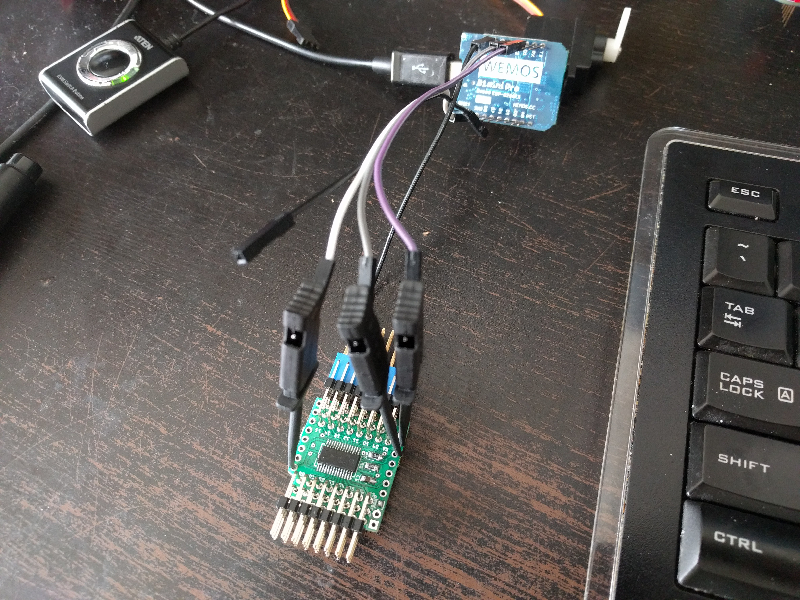

Assembling and Testing¶
Published on 2017-04-04 in Servo Breakout for WeMos D1 Mini.
The package with the chips finally arrived, so I can assemble the remaining boards. Soldering the TSSOP packages by hand is not terribly difficult, but it can still be tricky. So I’m not trusting myself, and apart from visual inspection I decided to also do at least basic testing of the shields. On the other hand, I have to ship them with the headers unsoldered, so I can’t simply plug them in and see if they work. Fortunately, I have some of those testing probes lying around:
With that, I can easily check that the devices show up in an i2c scan, and that they can wiggle the servo. It’’s not a full test – that would have taken way too much time – but it does cover the most common failure modes. Since I’m only making a few dozens of them, and I can assemble them as they are being ordered, I don’t think I need to make a more sophisticated testing rig just yet.